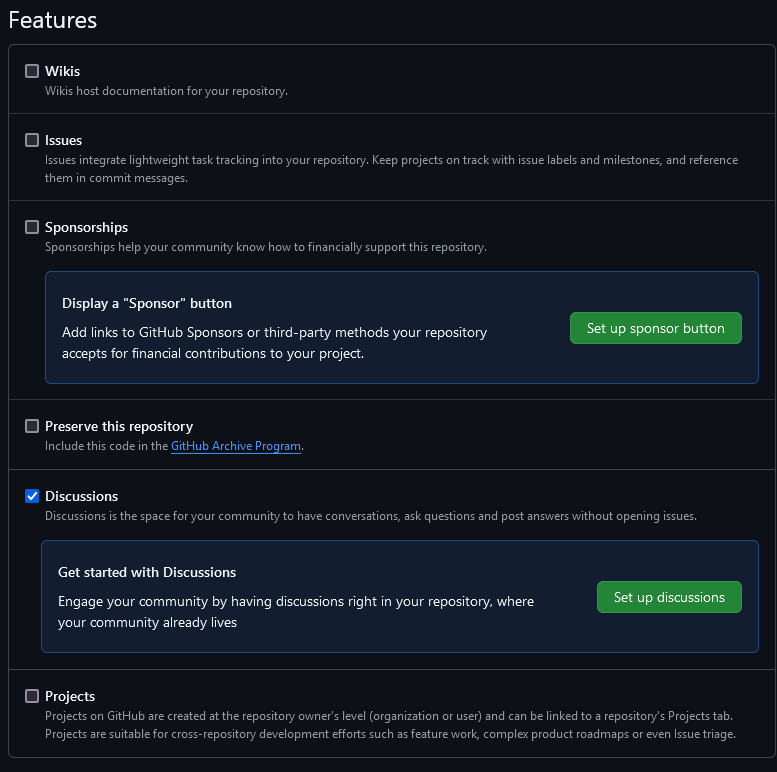
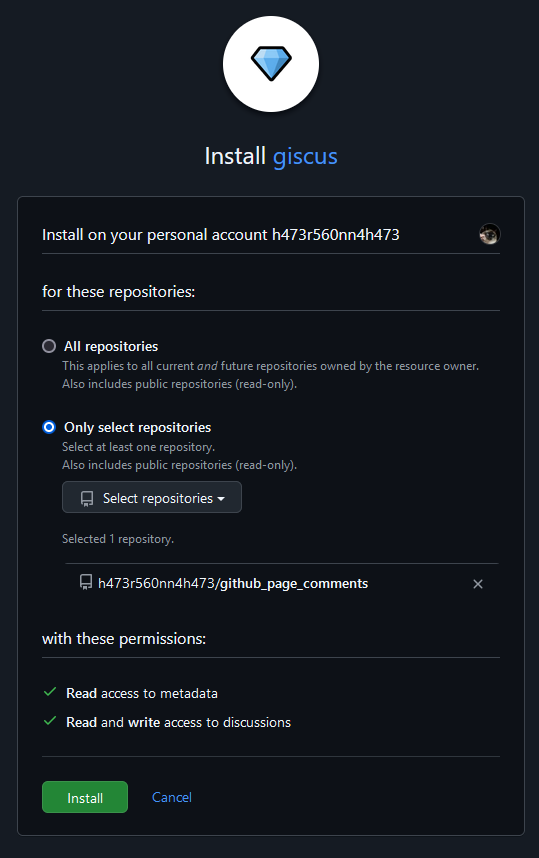
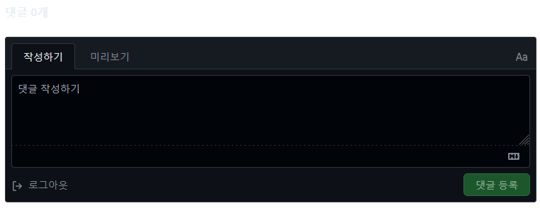

GitHub Pages: Hexo with Tranquilpeak theme - giscus
Contents
Introduction
소통할 창구가 없으면 스스로 알아차리기 전에는 문제가 있는지 모릅니다.
그래서 댓글 기능을 반드시 추가해야 했습니다.
처음 찾은 것은 Disqus입니다. 회원가입을 요구해서 포기했습니다.
다음으로 찾은 것은 Utterances입니다. 처음에는 잘 작동했었는데 나중에 다시 확인하니 댓글을 등록하려고 하면 404 에러를 띄워서 포기했습니다. 이런 이슈가 있는걸 보면 canonical을 추가하면서 고장 난 거 같습니다.
마지막으로 찾은 것이 giscus입니다. GitHub 계정만 있으면 됩니다.
Install: giscus
이하 과정 중 막히는 부분이 있다면 giscus 공식 문서를 따라서 진행하시면 됩니다.
giscus는 GitHub Discussions를 이용해 댓글을 구현합니다. 그래서 giscus가 사용할 저장소를 하나 만들어줘야 합니다.
원하는 이름으로 공개 저장소를 하나 만듭니다. 비공개 저장소로 만들면 다른 접속자가 댓글을 볼 수 없습니다.
만든 저장소의 Settings에서 Features을 찾아서 Discussions 기능을 활성화시킵니다.

저는 다른 기능은 비활성화시켰습니다. 지금은 필요없고, 나중에 필요해지면 활성화시키면 됩니다.
giscus에 접속해서 저장소에 giscus app을 설치합니다. 저장소를 선택할 때 `Only select repositories`에서 giscus 전용 저장소를 고릅니다.

giscus로 돌아가서 설정을 진행합니다.
테마를 고르면 그 테마의 색으로 설정 페이지가 바로 바뀌므로, 원하는 색을 고르기가 편합니다.
설정이 끝나면 giscus 사용에 설정한 내용이 반영되어 있습니다. <script> 블록에 마우스 커서가 올라가면 우측 상단에 복사 버튼이 표시되니 눌러서 설정을 복사해주세요.
이제 파일들을 만들고 수정해야 합니다. <folder>/themes/tranquilpeak/layout/_partial으로 이동해서 comment.ejs 파일을 만들고 편집기로 열어줍니다.
모든 포스트에 댓글 입력란을 표시하려면 복사한 설정을 붙여넣고 저장하면 되고, 포스트마다 댓글 입력란 표시 여부를 정하고 싶다면 코드를 약간 추가하면 됩니다.
- EJS
<% if (page.comment !== false) { %>
# 댓글 입력란 표시여부 설정 기능 추가
# 여기에 복사한 설정을 붙여넣습니다.
<% } %>저장하고 댓글 입력란을 표시하기 위해 같은 경로에 있는 post.ejs 파일을 편집기로 엽니다.
스크롤을 맨 밑으로 내리면 </article> 위에 </div>가 있습니다. 그 위에 <%- partial('comment') %>를 작성해 주세요.
- EJS
<%- partial('comment') %>
</div>
</article>파일 생성 및 수정은 이것으로 끝이지만, 수정 내용이 바로 적용되진 않습니다.Grunt를 사용해서 수정 내역을 반영해줘야 합니다.
Install: Grunt
Grunt는 자바스크립트 작업 자동화 도구입니다.
블로그 작업 중에 Grunt를 자주 사용하게 될 텐데, 그렇다고 여러가지를 익혀야 하는 것은 아닙니다.
아마 grunt build 명령 하나만을 쓰게 될 것입니다.
layout이나 css등을 수정했다면 저장하고 grunt build 까지 해줘야 변경된 내용이 적용됩니다.
명령 프롬프트를 열어서 npm install -g grunt-cli 명령으로 grunt를 설치하고, cd <folder>/themes/tranquilpeak으로 테마 폴더로 이동한 후 npm install grunt --save-dev[1] 명령어를 입력해서 Grunt를 설치합니다.
명령 프롬프트에 grunt build를 입력하고 Done.이 출력되면 Grunt로 해야 하는 작업은 끝입니다.
[1] –save-dev는 패키지를 개발 의존성으로 설치하라는 의미입니다. 애플리케이션의 실제 실행에는 필요하지 않은 패키지를 설치할 떄 사용합니다. 이 명령으로 설치된 패키지는
package.json의devDependencies에 저장됩니다. ↩
Check Results
댓글 입력란은 포스트의 맨 아래쪽에 출력되기 때문에 제대로 적용되었는지 확인하려면 포스트가 하나 있어야 합니다. Hexo에 기본으로 들어있는 Hello World 포스트가 있으니 이것으로 확인하겠습니다.
포스트에 댓글 입력란 표시여부 기능을 추가하지 않았다면 cd <folder>으로 Hexo 폴더로 이동한 후 hexo clean && hexo g && hexo s -o 명령으로 Hexo 서버를 실행하고 바로 보이는 Hello World 포스트에 접속해서 스크롤을 맨 밑으로 내리면 댓글 입력란이 표시되어 있습니다.
포스트에 댓글 입력란 표시여부 기능을 추가했다면 <folder>/source/_posts 경로에 들어가보면 hello-world.md 파일이 있습니다. 편집기로 열면 위쪽에 title: Hello World이 있을 텐데, 그 아래에 comment: true를 추가해 줍니다.
---
title: Hello World
comment: true
---저장한 뒤, hexo clean && hexo g && hexo s -o 명령으로 Hexo 서버를 실행하고 바로 보이는 Hello World 포스트에 접속해서 스크롤을 맨 밑으로 내리면 댓글 입력란이 표시되어 있습니다.

잘 적용되었습니다.
Conclusion
저는 Utterances를 설치해뒀다가 고장나서 giscus로 바꾼건데 comment.ejs 파일 내용만 갈아치우면 끝이라 어렵지 않았습니다.
giscus는 문제 없이 유지되었으면 좋겠네요.